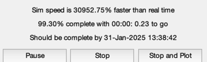
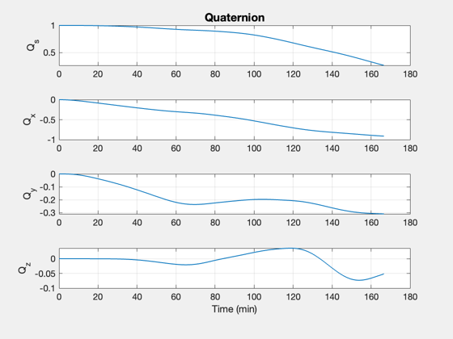
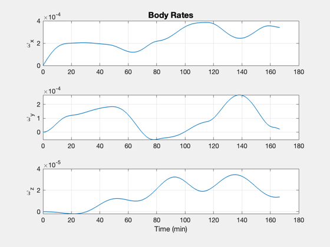
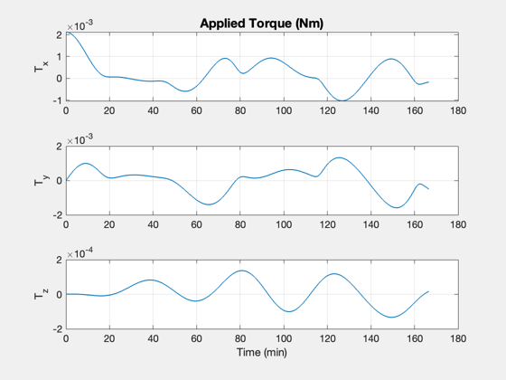
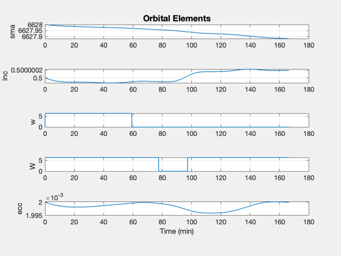
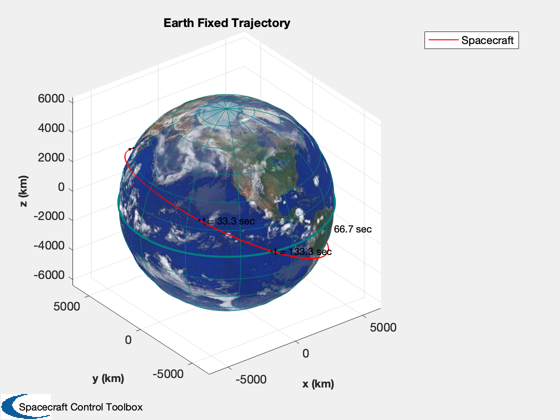
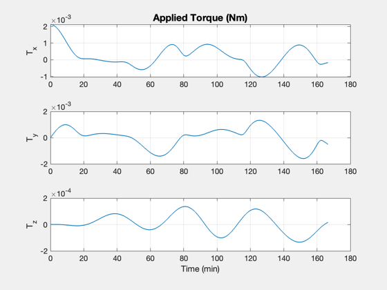
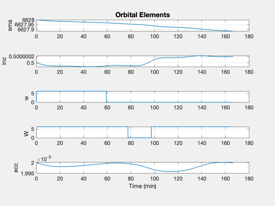
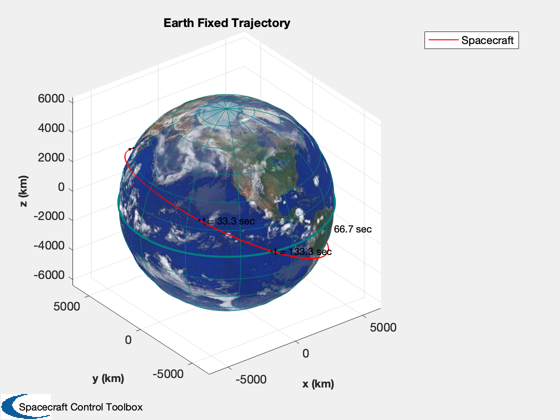

Simulation using the full disturbance model
Open-loop simulation using a CAD model and low-earth relevant disturbances, i.e. aero and planetary radiation.
See also: CrossSection, El2RV, QZero, JD2000, Disturbances, SunV1, RHSGeoJ2, TimeGUI, SetCADQuaternion, RK4, FRB, Plot2D, PlotPlanetOrbit
Contents
%-------------------------------------------------------------------------- % Copyright (c) 2022 Princeton Satellite Systems, Inc. % All rights reserved. %-------------------------------------------------------------------------- % Since version 2022.1 %--------------------------------------------------------------------------
Initial conditions
% This spacecraft has a bus cross-section of about 3 m^2 g = load('SCForImaging'); areaX = CrossSection( g, [], [1;0;0] ) areaY = CrossSection( g, [], [0;1;0] ) areaZ = CrossSection( g, [], [0;0;1] ) inr = g.mass.inertia; % can change inertia here invInr = inv(inr); % surface accommodation for k = 1:length(g.component) g.component(k).aero.cD = 0; % or empty? g.component(k).aero.sigmaN = 0.7; g.component(k).aero.sigmaT = 0.7; end el = [6378+250 0.5 0 0 0.002 0]; [r0,v0] = El2RV(el); q0 = QZero; x1 = [q0;[0;0;0]]; x2 = [r0;v0]; jD0 = JD2000; % Specify the disturbances to include e = Disturbances('defaults'); e.s = 1367*SunV1( jD0, r0 ); % Watts/m^2 e.shadow = 0; % for optical surfaces e.computeAero = true; e.computeGG = true; e.computePR = true; e.tGas = 900; e.mGas = 0.017; % Optional: J2 harmonic. % This will result in osculating elements but will obscure the effect of % drag on the altitude, depending on the length of the simulation dJ2 = RHSGeoJ2; % default J2 data dJ2.jD0 = jD0; useJ2 = false;
areaX =
2.96
areaY =
3.151
areaZ =
15.627
Plot every nPMax steps
%-----------------------
dT = 0.5;
nSim = 20000;
nP = 0;
kP = 0;
nPMax = 10;
nPlot = nSim/nPMax;
mET = 0;
jD = jD0;
Plotting arrays
%---------------- x1Plot = zeros( 7,nPlot ); x2Plot = zeros( 6,nPlot ); tPlot = zeros( 1,nPlot ); TPlot = zeros( 3,nPlot ); FPlot = zeros( 3,nPlot ); % Global for the TimeGUI %------------------------ global simulationAction simulationAction = ' '; [ ratioRealTime, tToGoMem ] = TimeGUI( nSim, 0, [], 0, dT, 'Disturbances Sim' ); for k = 1:nSim % Display the status message %--------------------------- [ ratioRealTime, tToGoMem ] = TimeGUI( nSim, k, tToGoMem, ratioRealTime, dT ); g = SetCADQuaternion( g, x1(1:4) ); % Assume disturbances are constant over each small timestep e.r = x2(1:3); e.v = x2(4:6); % optional: sun, magnetic field [f,t] = Disturbances('run',g,e); fDist = f.total/1000; % to kN from N tDist = t.total; % already in Nm % Update the equations of motion % ------------------------------- x1 = RK4(@FRB,x1,dT,mET,inr,invInr,tDist); if useJ2 x2 = RK4(@RHSGeoJ2,x2,dT,mET,dJ2,fDist/g.mass.mass); else x2 = RK4(@FOrbCart,x2,dT,jD,fDist/g.mass.mass); end mET = mET + dT; jD = jD + dT/86400; if (nP == 0) kP = kP + 1; x1Plot(:,kP) = x1; x2Plot(:,kP) = x2; tPlot(:,kP) = mET; TPlot(:,kP) = t.total; FPlot(:,kP) = f.total; nP = nPMax - 1; else nP = nP - 1; end % Time control %------------- switch simulationAction case 'pause' pause simulationAction = ' '; case 'stop' return; case 'plot' break; end end
Plot results
TimeGUI('close'); j = 1:kP; [tPlot,tL] = TimeLabel(tPlot(j)); Plot2D(tPlot,x1Plot( 1:4,j),tL,['Q_s';'Q_x';'Q_y';'Q_z'],'Quaternion') Plot2D(tPlot,x1Plot( 5:7,j),tL,['\omega_x';'\omega_y';'\omega_z'],'Body Rates') Plot2D(tPlot,Mag(x2Plot( 4:6,j)),tL,'|V_x|','Velocity (km/s)') Plot2D(tPlot,TPlot(:,j),tL,['T_x';'T_y';'T_z'],'Applied Torque (Nm)') % osculating elements els = RVSet2El(x2Plot(1:3,j),x2Plot(4:6,j)); Plot2D(tPlot,els(:,1:5)',tL,{'sma','inc','w','W','ecc'},'Orbital Elements') % 3D orbit PlotPlanetOrbit( x2Plot(:,j), jD0 + tPlot/86400, 'Spacecraft', 'Earth' ) %-------------------------------------- % $Id: 831ae27e47852b8da9b37333a7ed24a19aaa0e31 $ 
   
  